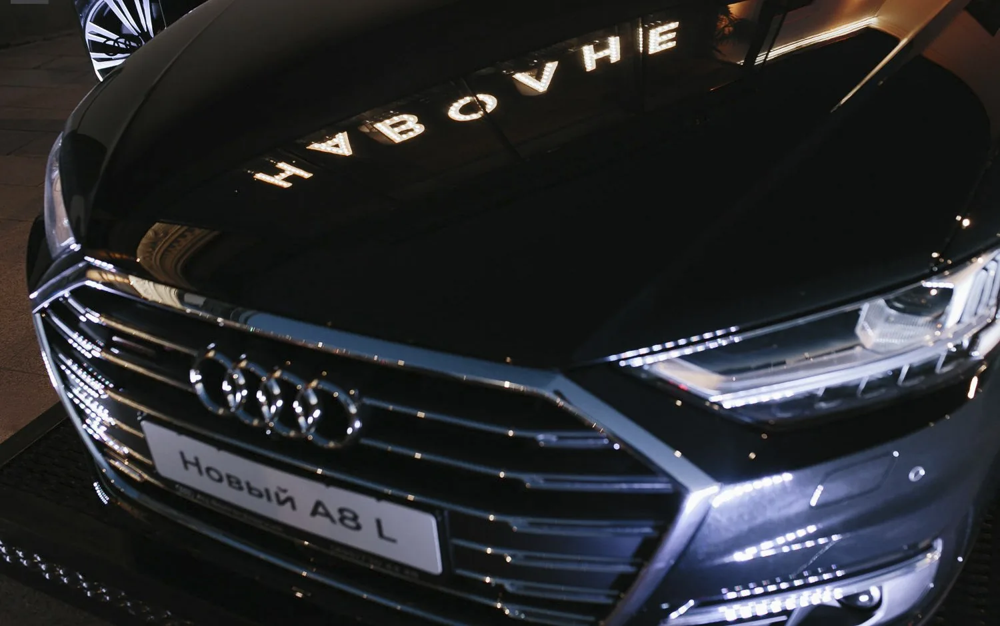
Audi × НАВОЛНЕ
На одной волне
с городом.
Интеграция АЦ Волгоградский в открытие ресторана НАВОЛНЕ by SOHO ROOMS — автомобильный бренд внутри светского гастрономического вечера.
Правильный контекст.
Естественное присутствие.
Открытие НАВОЛНЕ by SOHO ROOMS 13 апреля 2018 года собрало 620 гостей. Для АЦ Волгоградский это стало возможностью представить Audi в новой среде — рядом с гастрономией, общением и городской культурой.
Автомобиль и визуальные материалы бренда вошли в пространство события. В фотоистории вечер раскрывается через интерьер ресторана, гостей, музыку и детали сервировки.
Бренд —
часть вечера.
Визуальное присутствие Audi продолжалось внутри ресторана. Автомобильная тема органично соседствовала с атмосферой открытия, не требуя отдельного сценария визита.
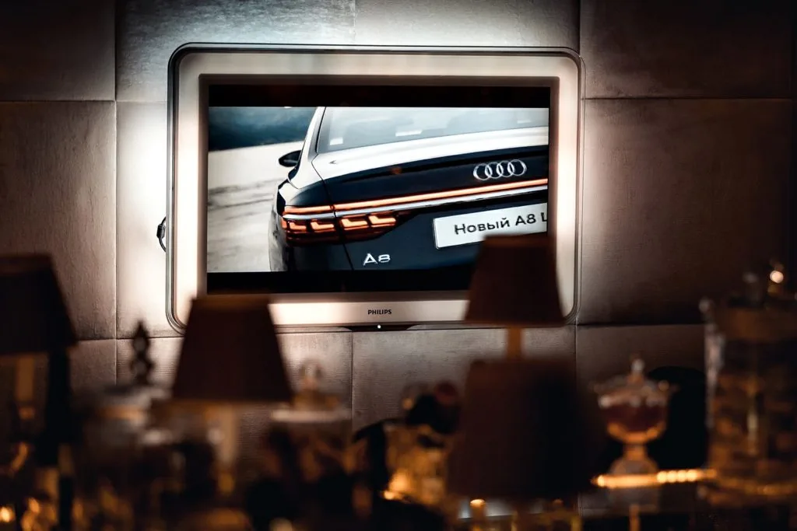
Город, вкус
и атмосфера встречи.
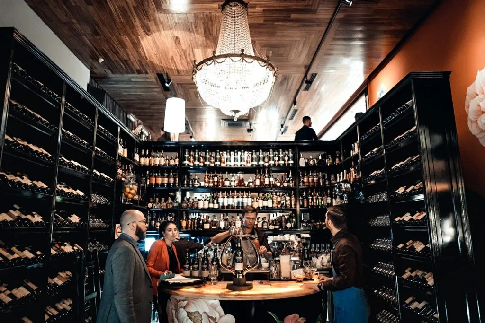
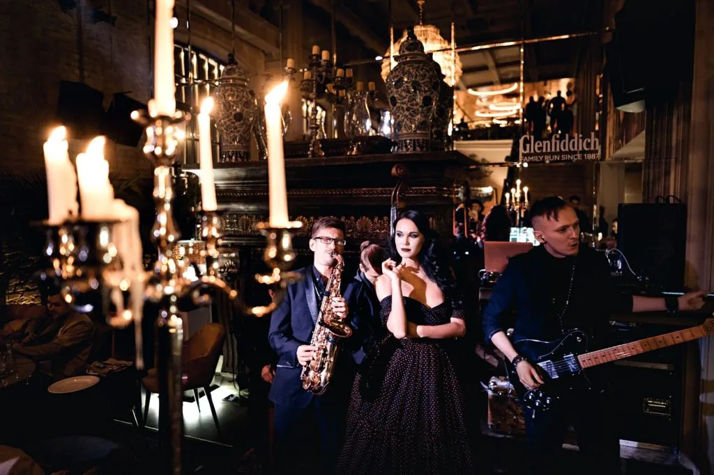
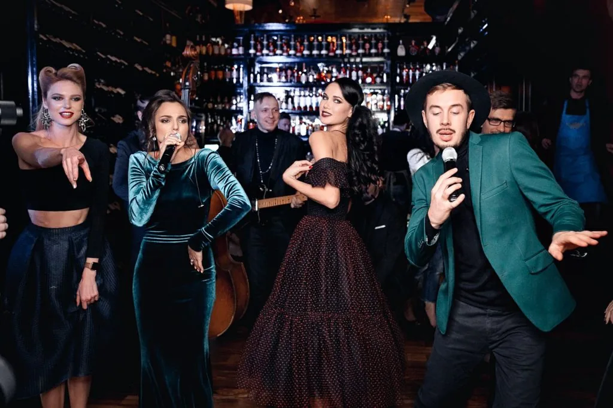
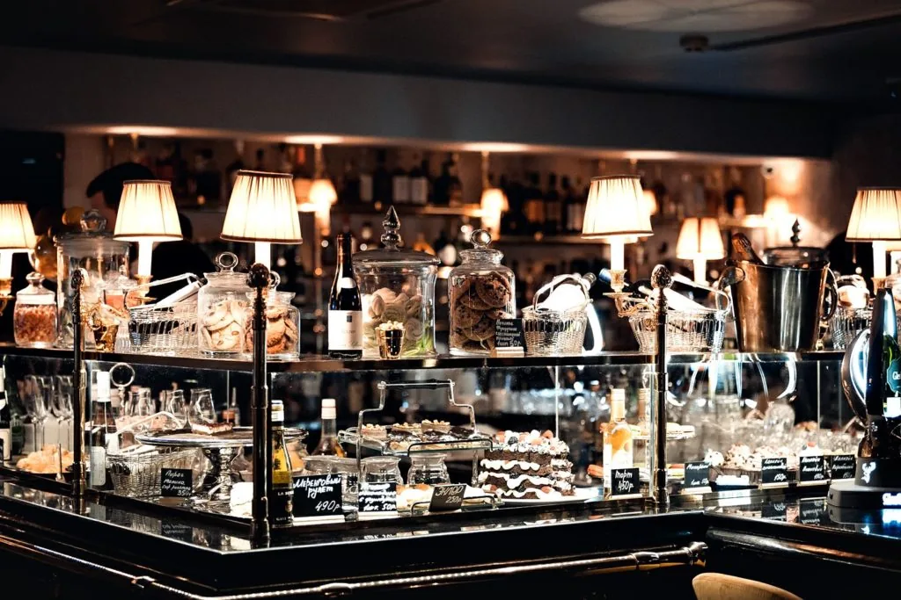
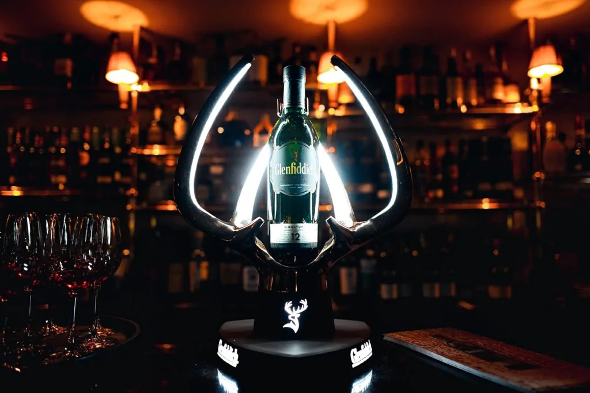
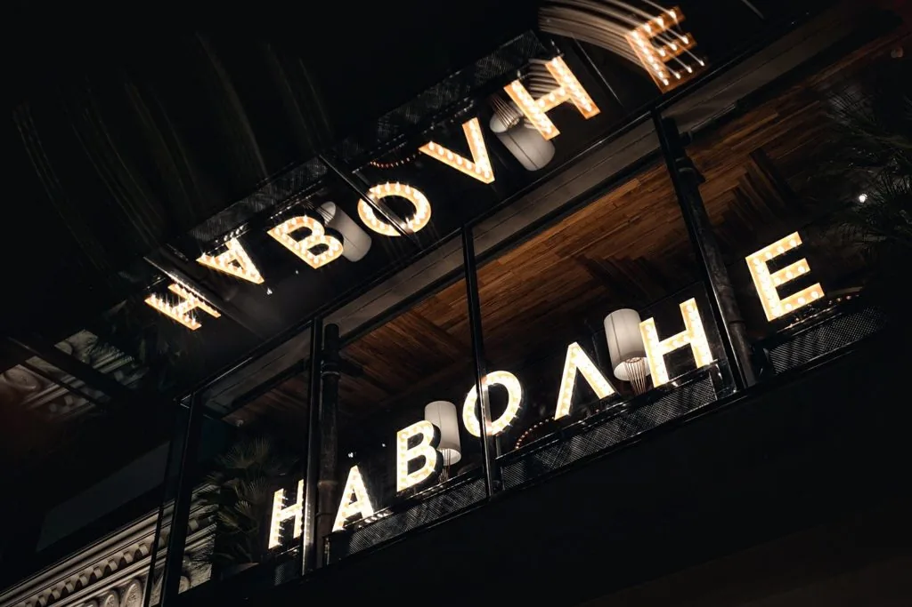
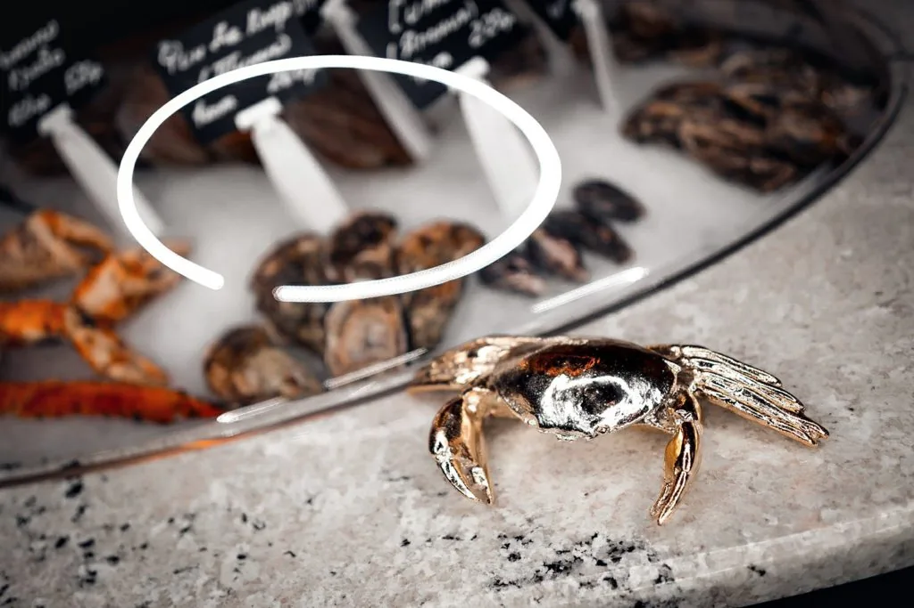
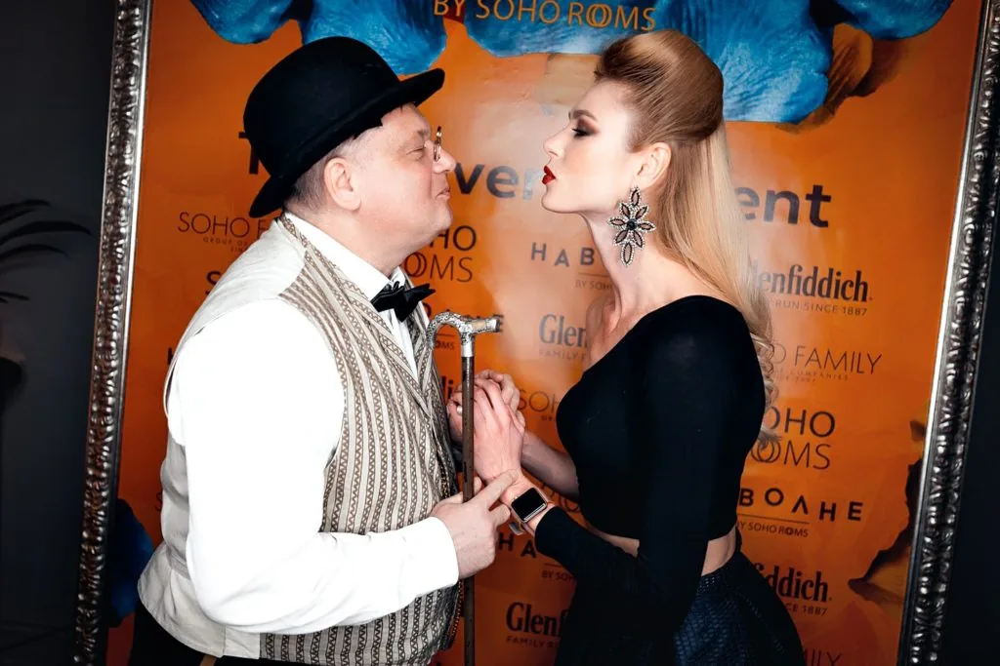
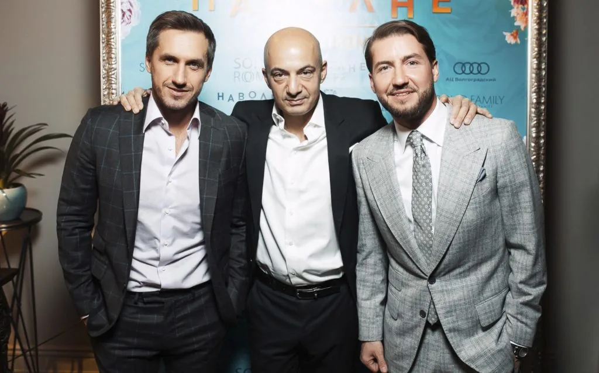
СЛЕДУЮЩИЙ ПРОЕКТ